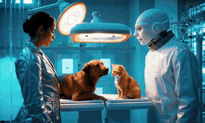
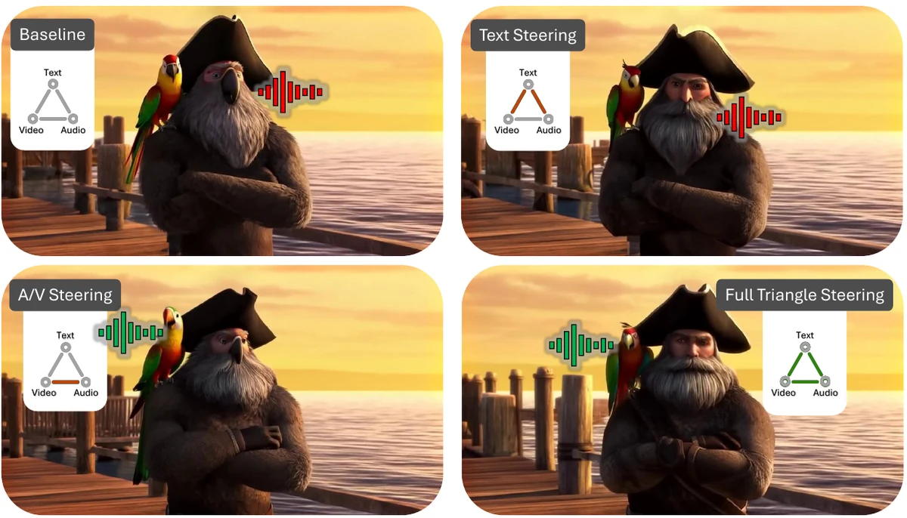

arXiv, 2026
Simon Fraser University
I build generative models that make video and sound together.
I'm a PhD student in Computing Science at Simon Fraser University, working with Ali Mahdavi-Amiri.
My research is on joint audio-video generation: getting a model to produce a scene where every sound belongs to something you can see. Before that I worked on texture generation.
Alongside research, I work as a software architect at UBC, designing large-scale systems.

arXiv, 2026

arXiv, 2026